Global Government spending(current USD), Size correlates with Share of GDP
Data choice overview
I initially chose this data set because recent events abroad have certainly escalated a global fear of war and I wanted to see how the tides of military spending ebbed and flowed over the course of recent history. The more I cleaned the data and played around with visualizations, the more questions I had. I am excited to see what sort of trends come from analyzing this data set.
I plan to show how different countries and regions value military spending and how that value changes over the course of time. Ideally I will be able to explain patterns in what I see with global or locally important historic events. How did the US spending change after 9/11 or more recently did we see anyone bolstering their defenses before news broke of the Russian invasion of Ukraine? How did spending change globally after the first and then second world war? While I am not a statistical expert and will not be able to refute a causation vs correlation argument, visualizations of these events and the corresponding spending patterns will still be interesting and hopefully provoking of conversation.
Data
Description
Below is a list of the available sheets in the SIPRI military spending data export. A few of the tabs are the same base information altered to reflect a specific currency or ratio. I am choosing to use the “Current USD” as my source of raw spending numbers as I believe it to be the easiest to understand and relate to. I will also be using “share of GDP” as well as “Share of Govt. spending” to provide context around a nations spending compared to their population they intend on defending as well as compared to overall spending. The Constant (2020) USD values are all in Millions.
There will be NA’s throughout the dataset which represent the fact that the data was unavailable at that time. This could mean that the country did not exist in that year or they were unwilling to share their military spending information with SIPRI and so the NAs have been left in to reflect that fact. Data exists for at least one country from 1949 to 2021. There are 173 total countries in the database with the full list as well as some additional information in the appendix.
“Gross domestic product (GDP) is the total monetary or market value of all the finished goods and services produced within a country’s borders in a specific time period.” - Investopedia
The Military spending information I am analyzing comes from SIPRI, the Stockholm International Peace Research Institute. SIPRI was established in 1966 for the purpose of “research into conflict, armaments, arms control and disarmament”. The organization is funded by the Swedish government however it regularly works internationally with research centers around the globe. SIPRI collected this particular data set from the official reports of each of the included governments in the form of official publications such as public budgets.
Here is a peek at what the raw information looks like.
Before pivoting my data I wanted to add a column for region. I chose to do this with an algorithm as an exercise in iteration however it would have been more practical to just hard code this column.
The list of countries where there are NA’s for every year:
Code
Regions <- rawData_CurrentUSD %>%filter(is.na(`1949`))%>%select(Country)Regions
You will notice that some of these are continents and sub-continents, I wanted to break these into a Region field. The pattern I saw and chose to exploit was the fact that the overarching category would always be followed with a more specific category such as the Africa followed by North Africa values (see earlier print outs to see raw information).
I then added an empty vector into the tibble and populated it according to the Country column using the pattern described above.
Once I had left flags in the region column dictating where each region was starting I could use fill(Region) in order to populate the rest of the column.
Code
emptyRegionCol <-as.numeric(vector(mode ="character",length =length(rawData_CurrentUSD$`1949`)))## doing as numeric here as a hacky way to fill this with NA's, any better way?#adding col to tibble to be populated latermutated_CurrentUSD <- rawData_CurrentUSD %>%mutate(Region =emptyRegionCol,.before=2)# replacing the empty char in region with actual region if 2 NAs appear in a row#iterates along the indices of the Country vectorfor(i inseq_along(mutated_CurrentUSD$Country) ){#if 2 nas in a row then do somethingif(is.na(mutated_CurrentUSD$`1949`[i]) &&is.na(mutated_CurrentUSD$`1949`[i+1]) ){ mutated_CurrentUSD$Region[i+1] <- mutated_CurrentUSD$Country[i+1] #this works because when referencing an index outside of the vector R will return NA - Great to know. }#if the row is a regionif(is.na(mutated_CurrentUSD$`1949`[i]) ){ mutated_CurrentUSD$Region[i+1] <- mutated_CurrentUSD$Country[i] }}mutated_CurrentUSD <- mutated_CurrentUSD %>%fill(Region)head(mutated_CurrentUSD)
Now that I had my proof of concept for cleaning one of the sheets, in a format I wanted, it was time to clean the other sheets as well. I could have taken the above code and modified it to work for each of the other tabs individually however I took the opportunity to practice with functions and created the below function to clean any of the tabs once they were loaded in and lightly pre-processed.
Clean and format function
Code
## creating a function to clean the other sheets##Input: a partially cleaned tibble, must have been read in and had excess rows trimmed##output: tibble with regions correctly labeled and umbrella region categories i.e Africa above south Africa removed##Note: All sub categories contained the main category name in them, will use regex to create groupings in the future.CleanData <-function(inSheet){ emptyRegionCol <-as.numeric(vector(mode ="character",length =nrow(select(inSheet,2))))#adding col to tibble to be populated later output <- inSheet %>%mutate(Region = emptyRegionCol,.before=2)# replacing the empty char in region with actual region if 2 NAs appear in a row#iterates along the indices of the Country vectorfor(i inseq_along(output$Country)){if(is.na(output[[i,3]]) &&is.na(output[[(i+1),3]])) output$Region[i+1] <- output$Country[i+1]if(is.na(output[[i,3]])) output$Region[i+1] <- output$Country[i] } output <- output %>%fill(Region)# removing header rows output <- output %>%filter(!is.na(output[[3]]))}
Below I call the function on each of the tibbles loaded in earlier. For the sake of space I will only show one tab being cleaned.
Next I pivot the years, it should be noted that both the pivoting and Converting of notation could be handled by the clean function above, i kept the steps separate so that I could show the progression of the dataframe.
I must also handle the xxx and … notations. From the information page of my data set I can see that the notation is described as follows:
Raw Notation
Meaning
…
Data unavailable
xxx
Country did not exist or was not independent during all or part of the year in question
For now I think I will just keep both as NA but will save this form of the information for future use.
Finally I will convert the column types to their correct representation.
Code
#Year to NumberCleaned_currentUSD$Year<-as.integer(Cleaned_currentUSD$Year)Cleaned_ShareOfGovSpend$Year<-as.integer(Cleaned_ShareOfGovSpend$Year)Cleaned_ShareOfGDP$Year<-as.integer(Cleaned_ShareOfGDP$Year)# value to doubleCleaned_currentUSD$value <-as.numeric(Cleaned_currentUSD$value)Cleaned_ShareOfGovSpend$value<-as.numeric(Cleaned_ShareOfGovSpend$value)Cleaned_ShareOfGDP$value<-as.numeric(Cleaned_ShareOfGDP$value)
Joining of the Different Tabs
Here we do a full join to maintain data from all the different tabs. The years when share of Gov spend are unavailable will then show NA as intended.
Mean, Median and Standard Deviation for each of the tabs.
First I wanted to get an idea of what my data looks like for each of the countries individually. In order to see this I grouped on country name and the types of data we have.
In order to get that done I need to pivot my data again.
Now that I have all of my data in a malleable state I will do some initial statistics on each tab of the initial dataset to give asome insight to what patterns or outliers may exist.
MilitarySpend_currentUSD
I will be using the current USD data for my analysis of major world events so I will not dive deeper at this point.
After sorting by mean share of GDP spend I see that the middle east has the highest by quite a large margin. This is odd because usally the US(North America), has the highest military spending. A max of 1.17 for GDP is also stageringly high when compared to the other regions. This prompts further investigation. A violin plot below gives a visualization of this distribution.
# removing NAs here because I cant plot them, I dont want to replace them with other values because it is still of interest when countries do not display their data.
Upon investigation of the underlying data I see that Kuwait in 1991 is the culprit of the high military spending as percent of GDP number.
I initially thought this was a typo since there were two 1s in a row and it was such an insanely high spend. A share of GDP of 1.173 means Kuwait spent 117.3% of their GDP in that year. Upon further investigation, this is actually true and it was driven by the Persian Gulf War(aka Gulf War). The Gulf War was a conflict triggered by Iraqs invasion of Kuwait in 1990. This invasion was the first major international crisis since the Cold War and will certainly be a topic I add to the final analysis.
https://www.britannica.com/event/Persian-Gulf-War
Loosely I will plot Iraq, US and Kuwait spend from 1985-1995 to explore this time period.
Code
combinedData%>%filter(Year >=1985& Year<=1995)%>%filter(Country %in%c("United States of America","Iraq","Kuwait"))%>%ggplot(mapping=aes(y = Spend, x = Year))+geom_line(aes(color = Country),na.rm =FALSE)+facet_wrap(vars(`viewOfSpend`),scales ="free_y")
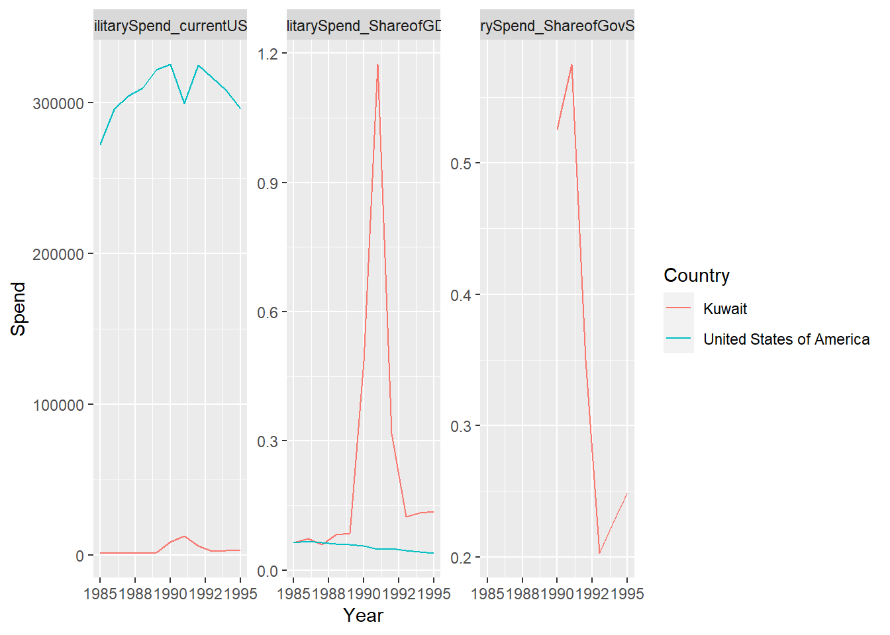
A new discovery! Iraq chose not to report their spending during the Gulf war. This is most likely due to the fact that SIPRI data collection is funded by the Swedish government who have pretty close ties to the United States. Sweden was one of the first countries to recognize US independence in 1783. Below I highlight reported Iraqi military spending overlaid with markings for the start and end of their reported data. We can see that in the time leading up to the gulf war military spending rose sharpley and even after the war they continued to spend above historical levels.
Code
startOfNoData<-1982endofNoData<-2003iraqMissingDataPLOT<-combinedData%>%filter(Country %in%c("Iraq"))%>%ggplot(mapping=aes( x = Spend,y = Year))+geom_point()+facet_wrap(vars(`viewOfSpend`),scales ="free_x")+scale_y_continuous(labels=seq(1949,2020,5),breaks =seq(1949,2020,5))iraqMissingDataPLOT+geom_hline(yintercept =1982,color="red")+geom_hline(yintercept =2003,color="red")+geom_hline(yintercept =1985,color="blue")+geom_hline(yintercept =1995,color="blue")+annotate("text",x=0,y=1982,label="1982",hjust=-0.1,vjust=-0.1,color="red")+annotate("text",x=0,y=2003,label="2003",hjust=-0.1,vjust=1.1,color="red")+annotate("text",x=0,y=1985,label="Start of Gulf war",hjust=-0.1,vjust=-0.1,color="blue")+annotate("text",x=0,y=1995,label="End of Gulf war",hjust=-0.1,vjust=-0.1,color="blue")
The share of Gov spend shows an insanely high max of sub-Saharan African spending as well as the Middle East.The Middle east spending has been explained above however below I will investigate the sub-sahara African spending.
Zooming into Zimbabwe’s Violin plot we can see that they often have an exteremly high military spending when compared to overall spending. As suggested by [5], Zimbabwe’s military spending is highly influenced by internal political turbulence more so than economic factors. It should also be mentioned that their military spending is often determined by SIPRI from estimation and not necessarily accurate, for this reason I wont be looking further into the anomaly.
Now that some introductory statistics have been done to explain the data at first glance, we focus in on the heavy hitters in the military spending space and look into how recent global events have affected their spending habits.
The top 6 spenders stand out not only in their mean spending habits but they continue to spend more and more.
Code
statsViz2<- byRegionStats_USD%>%mutate(test =fct_reorder(Region,desc(mean)))%>%ggplot(mapping=aes(y = test, x = mean))+geom_point(aes(color = Region, alpha=0.9, size=max)) +guides(alpha="none",color="none") +labs(title ="Certain Regions on average spend more than others" ,caption ="Data from SPIRI Military Expediture Database")statsViz2
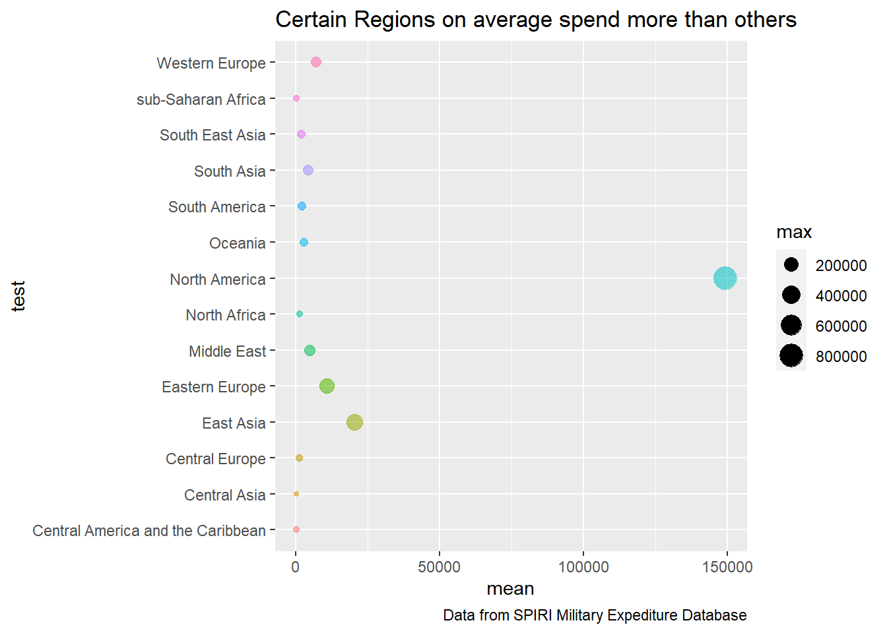
Top 6 spenders over time
This data is scaled for each country on the Y axis so that you can see the shape of the spending compared to global averages. I found the below interesting in that it paints the story of the US setting the pace and overall shape of the graph with East Asia playing a bit of catchup, mostly driven by China.
Code
byRegionStats_year_top6<-combinedData%>%group_by(Region,viewOfSpend,Year)%>%summarize(mean =mean(Spend, na.rm=TRUE))%>%filter(viewOfSpend =='MilitarySpend_currentUSD')%>%filter(Region == top6_mean)%>%arrange(desc(mean))# add global average overlayGlobalAverage<-combinedData%>%group_by(viewOfSpend,Year)%>%filter(viewOfSpend=="MilitarySpend_currentUSD")%>%summarise(GlobalAverage =mean(Spend),GlobalStandardDev =sd(Spend))byRegionplot_top6<- byRegionStats_year_top6%>%ggplot(mapping=aes(x = Year, y = mean))+geom_line(aes(color = Region)) +geom_line(data= GlobalAverage,aes(x=Year,y=GlobalAverage))+facet_wrap(vars(`Region`),scales ="free_y") +labs(title ="Raw Mean Spend in USD for top 6 Spenders with Global Average Overlay" ,caption ="Data from SPIRI Military Expediture Database")byRegionplot_top6
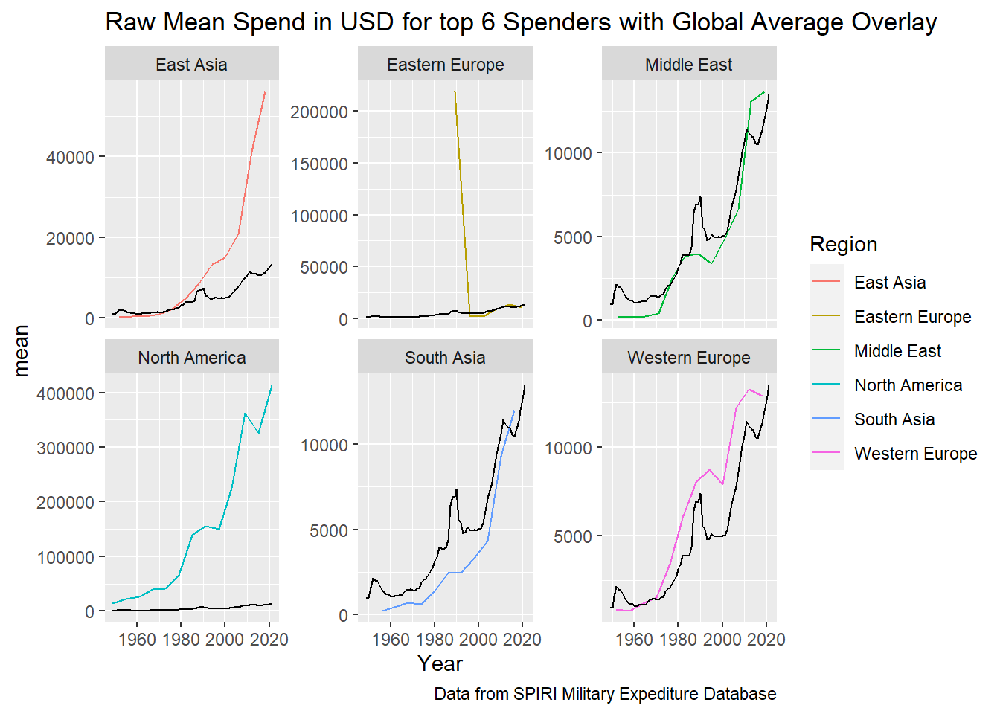
Top 6 spenders over time with GDP raw value overlay
In order to show the raw values of military spend and GDP for the top 6 spenders I back calculate the true GDP spend values from the percentage of military spend. This gives an idea of how the relationship of money spent on military causes and domestic production is shaped. We can see that for the most part raw GDP spend increases steadily, while we see more dramatic swings in military spending. An interesting point of note however is the increase in military spending in Eastern Europe and the Middle East associated with a dip in the regions GDP. If I were to continue to expand the report this would be an area of investigation.
Code
byRegionStats_year_top6_GDP<-combinedData%>%filter(Region %in% top6_mean)%>%pivot_wider(names_from = viewOfSpend,values_from = Spend)%>%mutate(rawGDP =`MilitarySpend_currentUSD`/`MilitarySpend_ShareofGDP`)%>%group_by(Region,Year)%>%summarize(meanUSD =mean(MilitarySpend_currentUSD, na.rm=TRUE), meanGDP =mean(rawGDP,na.rm=TRUE))byRegionplot_top6_GDP<- byRegionStats_year_top6%>%ggplot(mapping=aes(x = Year, y = mean))+geom_line(aes(color = Region)) +geom_line(data= byRegionStats_year_top6_GDP,aes(x=Year,y=meanGDP))+facet_wrap(vars(`Region`),scales ="free_y") +labs(title ="Raw Mean Spend in USD for top 6 Spenders with raw GDP Overlay" ,caption ="Data from SPIRI Military Expediture Database")byRegionplot_top6_GDP
In the following analysis I will be looking at significant events which impacted some if not all of the world. For the sake of clarity I will only be focusing on a select group of individual countries which are not directly involved. The top 10 countries which stand out as significant spenders in the last 10 years will be the ones focused on.
Code
# getting top 10 mean spenders in last 10 yearstopMeanCountries<-combinedData%>%group_by(Country,viewOfSpend)%>%filter(Year>=2012)%>%filter(viewOfSpend=="MilitarySpend_currentUSD")%>%summarize(mean =mean(Spend, na.rm=TRUE,sigfig=1))%>%arrange(desc(mean))%>%head(10)topMeanCountriesVec<-topMeanCountries$CountrytopMeanCountriesVec
# Raw data for these 10 countriestop10SpendCountriesbyYear<-combinedData%>%group_by(Country,viewOfSpend,Year)%>%filter(viewOfSpend=="MilitarySpend_currentUSD")%>%filter(Country %in% topMeanCountriesVec)
Code
grouped<-top10SpendCountriesbyYear%>%ungroup()%>%group_by(Country)top10CountryTibbles<-grouped%>%group_split(Country)# Using PURR here! Pretty powerful.# result is list of tibbles which have been processed to contain YoY spend increasestop10CountryTibblesYoY<-map(top10CountryTibbles,~ .x %>%mutate(percentChangeYoY = ((Spend -lag(Spend))/Spend)*100))# I then stack these DF on top of eachother to create one single DF to interact with.top10CountryYoY<-bind_rows(top10CountryTibblesYoY)
Plots detailing YoY(Year over Year) spending for each of the top 10 spenders. Green and green line segments indicate that year having an increase or decrease in spending respectively. From this visualization we can see more often than not the spending of most nations is increasing. Germany, France, Japan, and the UK stand out as those who do the most jumping back and forth between spending more or less YoY.
Code
rect_data <-data.frame( xmin=c(1990,1990),xmax=c(2020,2020),ymin=c(-100,0),ymax=c(0,20),col=c("green","red"))PercentChangeTop10Countries<-top10CountryYoY%>%filter(Year>=1992)%>%mutate(posOrNeg =case_when( percentChangeYoY>0~"Positive", percentChangeYoY<0~"Negative" ))%>%ggplot()+geom_line(aes(x = Year, y = percentChangeYoY,color =as.factor(posOrNeg)))+facet_wrap(vars(Country),scale="free_y")+theme(axis.text.x=element_text(angle=60,hjust=1))+aes(group=NA)+guides(color =guide_legend(title ="YoY Positive or negative spend"))PercentChangeTop10Countries
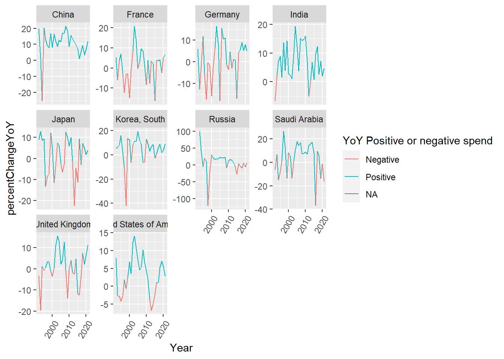
To give some perspective on just how much the US and now recently China spends on their military I have left the following vizualization of the top 10 spenders unscaled.
Code
top10Countries<- top10SpendCountriesbyYear%>%ggplot(mapping=aes(x = Year, y = Spend))+geom_point(aes(color = Country, alpha=0.9,)) +theme_light() +guides(alpha="none") +labs(title ="East asia and NA dominate raw spend" ,caption ="Data from SPIRI Military Expediture Database")top10Countries+facet_wrap(vars(`Country`))+theme(axis.text.x=element_text(angle=60,hjust=1))
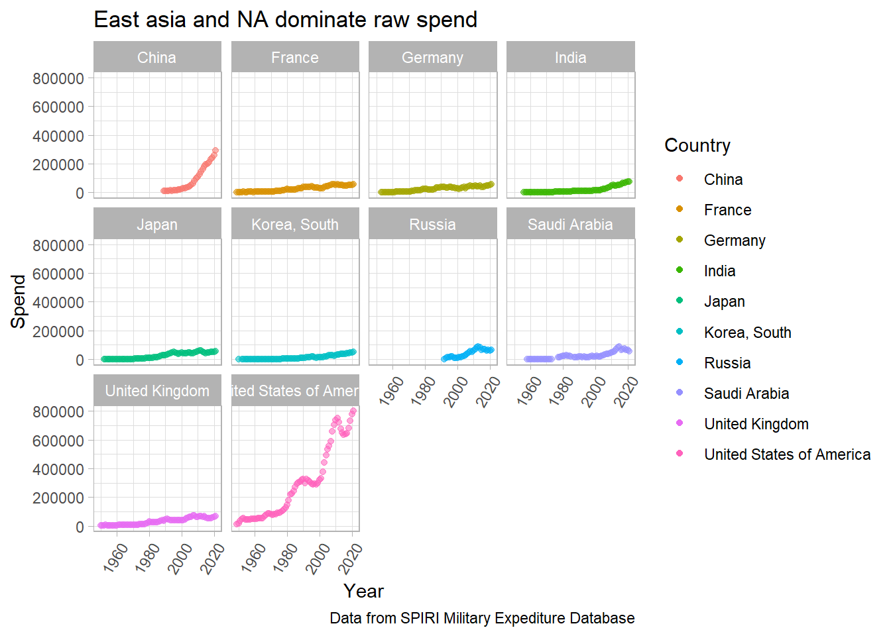
9/11 analysis
The first major global event I want to intentionally focus in on is the September 11th, 2001 attack on the World Trade Center in New York City. This terrorist attack on the United States left the world stunned and had lasting effects on global military spending.
9/11 Memorial Lights
Timeline 1998 - Bill Clinton warned bin laden preparing to hijack US aircraft
1999 - Germany intercepts intel about plane crash
2001 sept- Attack occurs oct-US attack on Afghanistan starts(end in 2021)
Parties Involved Al-Qaeda - Saudi Arabia - Kuwait
Look at US spending before and after
Code
timeLine<-data.frame(xintercept=c(1988,2001),Key_Events =c("US warned of possible airplane hijack","2001 attack on United States"),color =c("black","red"),stringsAsFactors =FALSE )US911<-combinedData%>%group_by(viewOfSpend,Year)%>%filter(Country =='United States of America')%>%summarize(mean =mean(Spend, na.rm=TRUE))%>%arrange(desc(mean)) us911Plot<- US911%>%ggplot(mapping=aes(x = Year, y = mean))+geom_line() +geom_vline(data= timeLine,aes(xintercept=xintercept,color=Key_Events))+labs(fill ="Key Events")+scale_colour_manual(values = timeLine$color)+facet_wrap(vars(`viewOfSpend`),scales ="free_y") +labs(title ="United States Military response to 9/11" ,caption ="Data from SPIRI Military Expediture Database")+theme(legend.position ="bottom")us911Plot
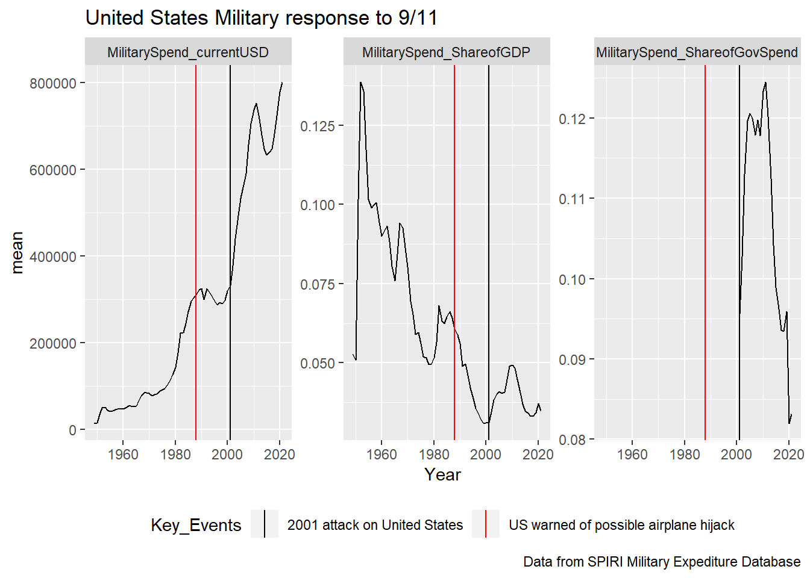
It looks like the event of 9/11 had a pretty significant impact on US spending. While initially it looks like spending just continues to rise when looking at the raw USD spending, it is refreshing to see the share of Gov spend has trended down in recent years as money is being spent elsewhere. Another interesting observation is that there was a slight upward trend in spending prior to the attack in 2001 however the spending increase was mostly reactionary.
Code
us911Plot+coord_cartesian((xlim=c(1990,2010)))
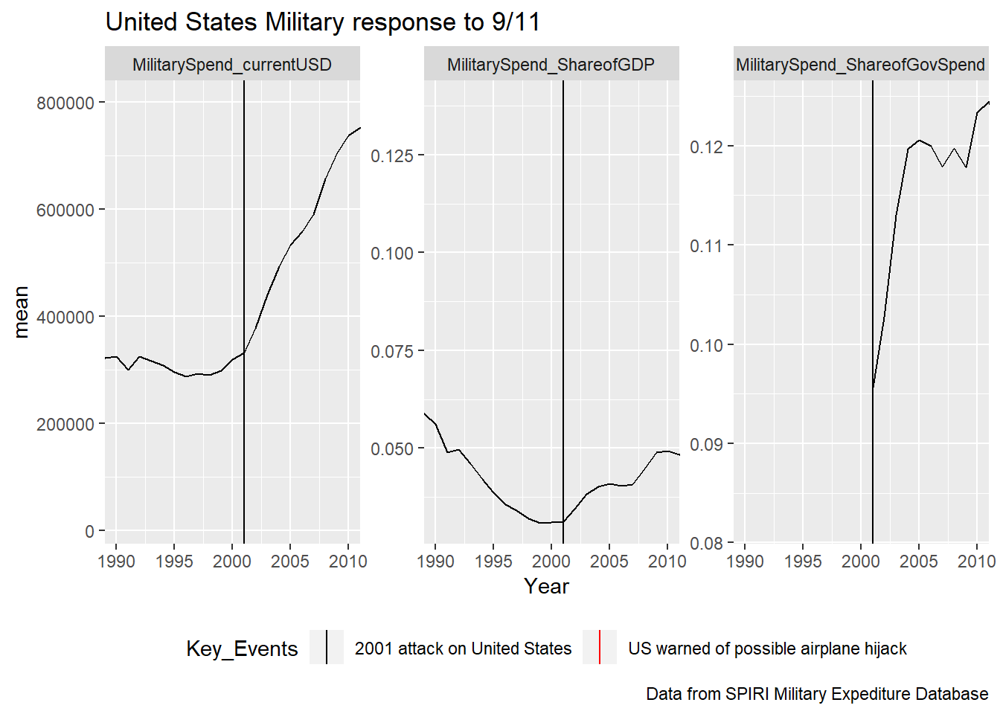
If we look at Spending for the other top 10 Spending countries we see that their spending increased along with the United States.
Code
top10Countries<- top10SpendCountriesbyYear%>%ggplot(mapping=aes(x = Year, y = Spend))+geom_point(aes(color = Country, alpha=0.9)) +theme_light() +guides(alpha="none") +labs(title ="How Top 10 spending Nations reacted to 2001 attack on the World Trade Center" ,caption ="Data from SPIRI Military Expediture Database")top10Countries+geom_vline(xintercept =2001,color="black")+facet_wrap(vars(`Country`),scales ="free_y")+theme(axis.text.x=element_text(angle=60,hjust=1),legend.position ="None")+coord_cartesian((xlim=c(1990,2010)))
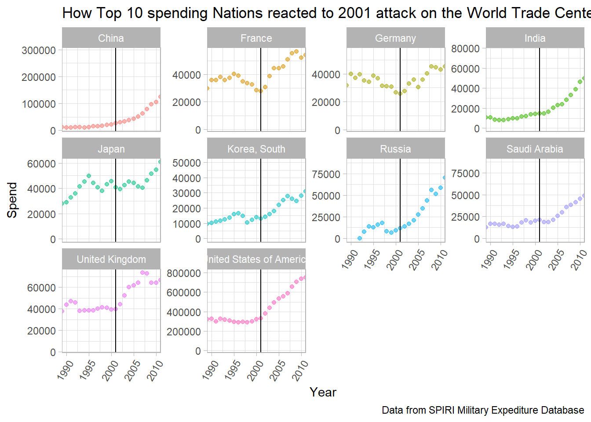
Ukraine war analysis
Due to the recency of the Russo-Ukrainian War I will only be able to provide an analysis of the time period building up to the invasion of Ukraine. In order to get an idea of if and how different regions, and their respective countries, prepared for the invasion I overlay the top 10 spenders with key dates.
Code
top10CountriesUkraineWar<- top10SpendCountriesbyYear%>%ggplot(mapping=aes(x = Year, y = Spend))+geom_point(aes(color = Country, alpha=0.9)) +theme_light() +guides(alpha="none")+labs(title ="How Top 10 spending Nations prepared for 2022 invasion of Ukraine" ,caption ="Data from SPIRI Military Expediture Database")top10CountriesUkraineWar+geom_vline(xintercept =2020,color='black')+geom_vline(xintercept =2015,color='black')+# war in the donbasfacet_wrap(vars(`Country`),scales ="free_y")+theme(axis.text.x=element_text(angle=60,hjust=1),legend.position ="None")+coord_cartesian((xlim=c(2010,2020)))
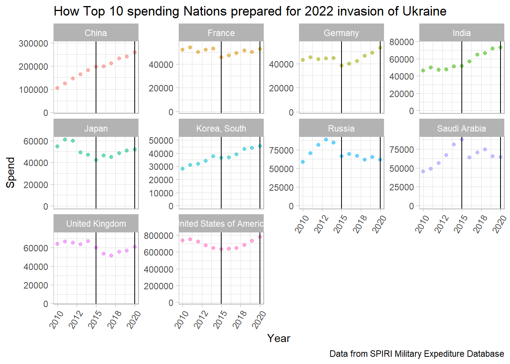
From the above we can somewhat see a trend in increased spending from the top 10 spenders. Next we investigate the Nations geographically surrounding Russia. Upon Putin’s first election, spending grew and then come his re-election spending increased at an expedited rate in Central and Eastern Europe.
Code
ukrainePlot<- combinedData%>%filter(viewOfSpend=="MilitarySpend_currentUSD")%>%filter(Region %in%c("Eastern Europe","Central Europe"))%>%filter(Country!="Russia")%>%filter(Year>=1995)%>%group_by(Region,Year)%>%summarise(Spend=mean(Spend))%>%ggplot(mapping=aes(x = Year, y = Spend))+geom_line(aes(color = Region, alpha=0.9)) +theme_light() +guides(alpha="none")+labs(title ="How Russian Bordering Nations responded to Putin election and invasion" ,caption ="Data from SPIRI Military Expediture Database")UkrainePlot+geom_vline(xintercept =2020,color='red',linetype="solid")+# official invasionannotate("text",x=2020,y=500,label="Invasion of Ukraine",hjust=0.5,vjust=-0.1,color="black",angle='90',size=3)+geom_vline(xintercept =2015,color='red',linetype="dashed")+# war in the donbasannotate("text",x=2015,y=500,label="War in the Donbas",hjust=0.5,vjust=-0.1,color="black",angle='90',size=3)+geom_vline(xintercept =2004,color='black',linetype="solid")+# putin first electionannotate("text",x=2004,y=1500,label="Putin re-elected",hjust=0.7,vjust=-0.1,color="black",angle='90',size=3)+geom_vline(xintercept =2000,color='black',linetype="dashed")+# putin Wins presidential election securing second termannotate("text",x=2000,y=1500,label="Putin wins first election",hjust=0.7,vjust=-0.1,color="black",angle='90',size=3)+facet_wrap(vars(`Region`))+theme(axis.text.x=element_text(angle=60,hjust=1),legend.position ="None")
Error in eval(expr, envir, enclos): object 'UkrainePlot' not found
Nations surrounding Ukraine and Russia had some of the most defined reactions to Putins re-election and the war in the Donbas. Vertical lines represetnt the same events as in the last vizualization.
Code
combinedData%>%filter(viewOfSpend=="MilitarySpend_currentUSD")%>%filter(Country %in%c("Russia","Ukraine","Poland","Belarus","Moldova","Kazakhstan","Romania","Slovakia"))%>%ggplot(mapping=aes(x = Year, y = Spend))+geom_point(aes(color = Country, alpha=0.9)) +theme_light() +guides(alpha="none")+labs(title ="How Top 10 spending Nations prepared for 2022 invasion of Ukraine" ,caption ="Data from SPIRI Military Expediture Database")+geom_vline(xintercept =2020,color='red',linetype="solid")+# official invasiongeom_vline(xintercept =2015,color='red',linetype="dashed")+# war in the donbasgeom_vline(xintercept =2004,color='black',linetype="solid")+# putin first electiongeom_vline(xintercept =2000,color='black',linetype="dashed")+# putin Wins presidential election securing second termfacet_wrap(vars(`Country`),scales ="free_y")+theme(axis.text.x=element_text(angle=60,hjust=1),legend.position ="None")+coord_cartesian((xlim=c(1990,2020)))
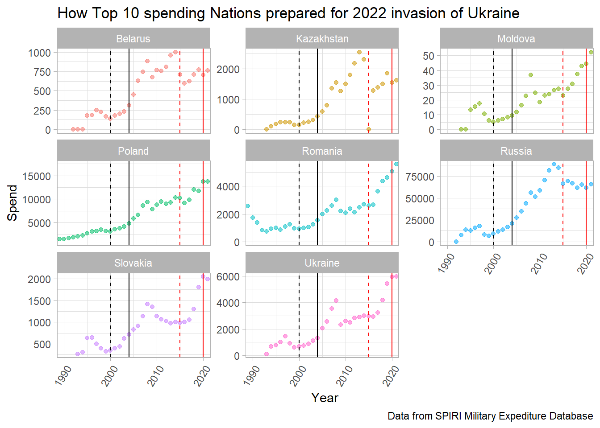
Global USD Military spending through all available years
Code
# might facet this out for all the tabs??GlobalReviewPlot<- GlobalAverage%>%ggplot()+geom_line(data= GlobalAverage,aes(x=Year,y=GlobalAverage),size=1.5)# annotationsGlobalReviewPlot
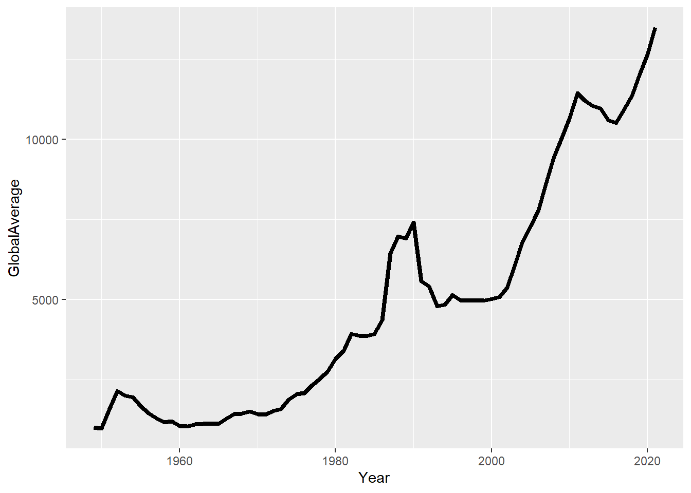
Code
# +# geom_vline(xintercept = 2001,color="red")+#9/11# geom_vline(xintercept = 2020,color="red")+#covid declared a pandemic march 11 2020# geom_vline(xintercept = 2021,color="red")# labs(title="Average Global spending in USD")
“Every gun that is made, every warship launched, every rocket fired signifies in the final sense, a theft from those who hunger and are not fed, those who are cold and are not clothed. > > This world in arms is not spending money alone. It is spending the sweat of its laborers, the genius of its scientists, the hopes of its children. This is not a way of life at all in any > true sense. Under the clouds of war, it is humanity hanging on a cross of iron.”
Dwight D. Eisenhower
After reviewing the data at a high level and diving deeper into spending surrounding 9/11 and the Russo-Ukraine war I have found a few facts have held true through the years. Powerful country Military spending rises like ships in high tide, when one goes up, they all do. In the years leading up to an altercation the nations involved often increased spending both in raw USD as well as percentage of their government spend and GDP. In the future I would like to spend some more time analyzing the tabs other than USD spend and look a little bit more at the times of peace and how countries would prioritize spending that time period. I had a lot of fun with this project and can say now that I am competent with R even when starting with zero experience beforehand.
[3] R Core Team (2017). R: A language and environment for statistical computing. R Foundation for Statistical Computing, Vienna, Austria. URL https://www.R-project.org/.
[4] Wickham, H., & Grolemund, G. (2016). R for data science: Visualize, model, transform, tidy, and import data. OReilly Media.
[5] Tambudzai, Z. (2011). Determinants of military expenditure in Zimbabwe. The Economics of Peace and Security Journal, 6(2). doi:http://dx.doi.org/10.15355/epsj.6.2.41
[6] https://www.investopedia.com/terms/g/gdp.asp
[7] Centers for Disease Control and Prevention. (2022, August 16). CDC Museum Covid-19 Timeline. Centers for Disease Control and Prevention. Retrieved December 7, 2022, from https://www.cdc.gov/museum/timeline/covid19.html
Full descriptions of source sheet tabs as provided by SIPRI: 1. Introduction 2. Estimates of world, regional and sub-regional totals in constant (2019) US$ (billions). 3. Data for military expenditure by country in current price local currency, presented according to each country’s financial year. 4. Data for military expenditure by country in current price local currency, presented according to calendar year. 5. Data for military expenditure by country in constant price (2019) US$ (millions), presented according to calendar year, and in current US$m. for 2020. 6. Data for military expenditure by country in current US$ (millions), presented according to calendar year. 7. Data for military expenditure by country as a share of GDP, presented according to calendar year. 8. Data for military expenditure per capita, in current US$, presented according to calender year. (1988-2020 only) 9. Data for military expenditure as a percentage of general government expenditure. (1988-2020 only)
Additional Country info:
List of Countries:
Number of countries by region:
Cleaning with intermitant steps
Input and Cleaning
Reading in raw information
The data provided by the Stockholm International Peace Research Institute(SIPRI) was separated into multiple tabs in one excel .xlsx file.
In order to begin working I imported the tabs I planned to utilize, skipping over some of the notes and title rows at the start of each tab.
Before pivoting my data I wanted to add a column for region. I chose to do this with an algorithm as an exercise in iteration however it would have been more practical to just hard code this column.
The list of countries where there are NA’s for every year:
Code
Regions <- rawData_CurrentUSD %>%filter(is.na(`1949`))%>%select(Country)Regions
You will notice that some of these are continents and sub-continents, I wanted to break these into a Region field. The pattern I saw and chose to exploit was the fact that the overarching category would always be followed with a more specific category such as the Africa followed by North Africa values (see earlier print outs to see raw information).
I then added an empty vector into the tibble and populated it according to the Country column using the pattern described above.
Once I had left flags in the region column dictating where each region was starting I could use fill(Region) in order to populate the rest of the column.
Code
emptyRegionCol <-as.numeric(vector(mode ="character",length =length(rawData_CurrentUSD$`1949`)))## doing as numeric here as a hacky way to fill this with NA's, any better way?#adding col to tibble to be populated latermutated_CurrentUSD <- rawData_CurrentUSD %>%mutate(Region =emptyRegionCol,.before=2)# replacing the empty char in region with actual region if 2 NAs appear in a row#iterates along the indices of the Country vectorfor(i inseq_along(mutated_CurrentUSD$Country) ){#if 2 nas in a row then do somethingif(is.na(mutated_CurrentUSD$`1949`[i]) &&is.na(mutated_CurrentUSD$`1949`[i+1]) ){ mutated_CurrentUSD$Region[i+1] <- mutated_CurrentUSD$Country[i+1] #this works because when referencing an index outside of the vector R will return NA - Great to know. }#if the row is a regionif(is.na(mutated_CurrentUSD$`1949`[i]) ){ mutated_CurrentUSD$Region[i+1] <- mutated_CurrentUSD$Country[i] }}mutated_CurrentUSD <- mutated_CurrentUSD %>%fill(Region)head(mutated_CurrentUSD)
Now that I had my proof of concept for cleaning one of the sheets, in a format I wanted, it was time to clean the other sheets as well. I could have taken the above code and modified it to work for each of the other tabs individually however I took the opportunity to practice with functions and created the below function to clean any of the tabs once they were loaded in and lightly pre-processed.
Clean and format function
Code
## creating a function to clean the other sheets##Input: a partially cleaned tibble, must have been read in and had excess rows trimmed##output: tibble with regions correctly labeled and umbrella region categories i.e Africa above south Africa removed##Note: All sub categories contained the main category name in them, will use regex to create groupings in the future.CleanData <-function(inSheet){ emptyRegionCol <-as.numeric(vector(mode ="character",length =nrow(select(inSheet,2))))#adding col to tibble to be populated later output <- inSheet %>%mutate(Region = emptyRegionCol,.before=2)# replacing the empty char in region with actual region if 2 NAs appear in a row#iterates along the indices of the Country vectorfor(i inseq_along(output$Country)){if(is.na(output[[i,3]]) &&is.na(output[[(i+1),3]])) output$Region[i+1] <- output$Country[i+1]if(is.na(output[[i,3]])) output$Region[i+1] <- output$Country[i] } output <- output %>%fill(Region)# removing header rows output <- output %>%filter(!is.na(output[[3]]))}
Below I call the function on each of the tibbles loaded in earlier. For the sake of space I will only show one tab being cleaned.
Next I pivot the years, it should be noted that both the pivoting and Converting of notation could be handled by the clean function above, i kept the steps separate so that I could show the progression of the dataframe.
I must also handle the xxx and … notations. From the information page of my data set I can see that the notation is described as follows:
Raw Notation
Meaning
…
Data unavailable
xxx
Country did not exist or was not independent during all or part of the year in question
For now I think I will just keep both as NA but will save this form of the information for future use.
Finally I will convert the column types to their correct representation.
Before:
Code
#Year to NumberCleaned_currentUSD$Year<-as.integer(Cleaned_currentUSD$Year)Cleaned_ShareOfGovSpend$Year<-as.integer(Cleaned_ShareOfGovSpend$Year)Cleaned_ShareOfGDP$Year<-as.integer(Cleaned_ShareOfGDP$Year)# value to doubleCleaned_currentUSD$value <-as.numeric(Cleaned_currentUSD$value)Cleaned_ShareOfGovSpend$value<-as.numeric(Cleaned_ShareOfGovSpend$value)Cleaned_ShareOfGDP$value<-as.numeric(Cleaned_ShareOfGDP$value)
After:
Joining of the Different Tabs
Here we do a full join to maintain data from all the different tabs. The years when share of Gov spend are unavaiable will then show NA as intended.
byRegionStats_year_top6<-combinedData%>%group_by(Region,viewOfSpend,Year)%>%summarize(mean =mean(Spend, na.rm=TRUE))%>%filter(viewOfSpend =='MilitarySpend_currentUSD')%>%filter(Region == top6_mean)%>%arrange(desc(mean))# add global average overlayGlobalAverage<-combinedData%>%group_by(viewOfSpend,Year)%>%filter(viewOfSpend=="MilitarySpend_currentUSD")%>%summarise(GlobalAverage =mean(Spend),GlobalStandardDev =sd(Spend))byRegionplot_top6<- byRegionStats_year_top6%>%ggplot(mapping=aes(x = Year, y = mean))+geom_point(aes(color = Region, alpha=0.9,)) +geom_line(data= GlobalAverage,aes(x=Year,y=GlobalAverage))+facet_wrap(vars(`Region`)) +labs(title ="Raw Mean Spend in USD for top 6 Spenders with Global Average Overlay" ,caption ="Data from SPIRI Military Expediture Database")byRegionplot_top6
---title: "Global Military Spending - An Analysis"description: "WIP Final Project"author: "Julian Castoro"date: "`r Sys.Date()`"format: html: toc: true code-fold: true code-copy: true code-tools: true df-print: pagededitor: markdown: wrap: 72tags: - Julian Castoro - Final Project#output: NOT DISTILL---```{r warning=FALSE, message=FALSE}##| label: setup#| warning: false#| message: falselibrary(tidyverse)library(lubridate)library(ggplot2)library(gganimate)library(readxl)library(dplyr)library(purrr)library(lubridate)library(leaflet)options(digits =3,decimals=2)options(scipen =999)knitr::opts_chunk$set(echo =TRUE, warning=FALSE, message=FALSE)```# Introduction## Data choice overviewI initially chose this data set because recent events abroad havecertainly escalated a global fear of war and I wanted to see how thetides of military spending ebbed and flowed over the course of recenthistory. The more I cleaned the data and played around withvisualizations, the more questions I had. I am excited to see what sortof trends come from analyzing this data set.I plan to show how different countries and regions value militaryspending and how that value changes over the course of time. Ideally Iwill be able to explain patterns in what I see with global or locallyimportant historic events. How did the US spending change after 9/11 ormore recently did we see anyone bolstering their defenses before newsbroke of the Russian invasion of Ukraine? How did spending changeglobally after the first and then second world war? While I am not astatistical expert and will not be able to refute a causation vscorrelation argument, visualizations of these events and thecorresponding spending patterns will still be interesting and hopefullyprovoking of conversation.## Data### DescriptionBelow is a list of the available sheets in the SIPRI military spendingdata export. A few of the tabs are the same base information altered toreflect a specific currency or ratio. I am choosing to use the "CurrentUSD" as my source of raw spending numbers as I believe it to be theeasiest to understand and relate to. I will also be using "share of GDP"as well as "Share of Govt. spending" to provide context around a nationsspending compared to their population they intend on defending as wellas compared to overall spending. The Constant (2020) USD values are all in Millions. There will be NA's throughout the dataset which represent the fact that the data was unavailable at that time. This could mean that the country did not exist in that year or they were unwilling to share their military spending information with SIPRI and so the NAs have been left in to reflect that fact. Data exists for at least one country from 1949 to 2021. There are 173 total countries in the database with the full list as well as some additional information in the appendix."Gross domestic product (GDP) is the total monetary or market value ofall the finished goods and services produced within a country's bordersin a specific time period." - Investopedia```{r}sheets <-excel_sheets("_data/SIPRI-Milex-data-1949-2021.xlsx")sheets```### SourceThe Military spending information I am analyzing comes from **SIPRI**,the **S**tockholm **I**nternational **P**eace **R**esearch**I**nstitute. SIPRI was established in 1966 for the purpose of"research into conflict, armaments, arms control and disarmament". Theorganization is funded by the Swedish government however it regularlyworks internationally with research centers around the globe. SIPRIcollected this particular data set from the official reports of each ofthe included governments in the form of official publications such aspublic budgets.Here is a peek at what the raw information looks like.```{r message=FALSE,R.options= (tibble.max_extra_cols=0)}#| warning: false#| message: falserawrawData_ShareOfGovSpend <-read_excel("_data/SIPRI-Milex-data-1949-2021.xlsx",sheet=sheets[9])#knitr::kable(head(rawrawData_ShareOfGovSpend,10),"simple")head(rawrawData_ShareOfGovSpend,10)```# Input and Cleaning## Reading in raw informationThe data provided by the Stockholm International Peace ResearchInstitute(SIPRI) was separated into multiple tabs in one excel .xlsxfile.In order to begin working I imported the tabs I planned to utilize,skipping over some of the notes and title rows at the start of each tab.```{r}rawData_CurrentUSD <-read_excel("_data/SIPRI-Milex-data-1949-2021.xlsx",sheet=sheets[6],skip=5)rawData_ShareOfGDP <-read_excel("_data/SIPRI-Milex-data-1949-2021.xlsx",sheet=sheets[7],skip=5)rawData_ShareOfGovSpend <-read_excel("_data/SIPRI-Milex-data-1949-2021.xlsx",sheet=sheets[9],skip=7)``````{r echo=FALSE}# output#head(rawData_CurrentUSD)#head(rawData_ShareOfGDP)#head(rawData_ShareOfGovSpend)```Next I delete the first row of NA as well as the Notes column for eachtibble.```{r}rawData_CurrentUSD <- rawData_CurrentUSD[-1,] %>%select(-Notes)rawData_ShareOfGDP <- rawData_ShareOfGDP[-1,] %>%select(-Notes)rawData_ShareOfGovSpend <- rawData_ShareOfGovSpend[-1,] %>%select(-2:-3)``````{r echo=FALSE}#head(rawData_CurrentUSD)#head(rawData_ShareOfGDP)#head(rawData_ShareOfGovSpend) ```## Tidying DataBefore pivoting my data I wanted to add a column for region. I chose todo this with an algorithm as an exercise in iteration however it wouldhave been more practical to just hard code this column.The list of countries where there are NA's for every year:```{r}Regions <- rawData_CurrentUSD %>%filter(is.na(`1949`))%>%select(Country)Regions```You will notice that some of these are continents and sub-continents, Iwanted to break these into a `Region` field. The pattern I saw and choseto exploit was the fact that the overarching category would always befollowed with a more specific category such as the **Africa** followedby **North Africa** values (see earlier print outs to see rawinformation).I then added an empty vector into the tibble and populated it accordingto the Country column using the pattern described above.Once I had left flags in the region column dictating where each regionwas starting I could use `fill(Region)` in order to populate the rest ofthe column.```{r}emptyRegionCol <-as.numeric(vector(mode ="character",length =length(rawData_CurrentUSD$`1949`)))## doing as numeric here as a hacky way to fill this with NA's, any better way?#adding col to tibble to be populated latermutated_CurrentUSD <- rawData_CurrentUSD %>%mutate(Region =emptyRegionCol,.before=2)# replacing the empty char in region with actual region if 2 NAs appear in a row#iterates along the indices of the Country vectorfor(i inseq_along(mutated_CurrentUSD$Country) ){#if 2 nas in a row then do somethingif(is.na(mutated_CurrentUSD$`1949`[i]) &&is.na(mutated_CurrentUSD$`1949`[i+1]) ){ mutated_CurrentUSD$Region[i+1] <- mutated_CurrentUSD$Country[i+1] #this works because when referencing an index outside of the vector R will return NA - Great to know. }#if the row is a regionif(is.na(mutated_CurrentUSD$`1949`[i]) ){ mutated_CurrentUSD$Region[i+1] <- mutated_CurrentUSD$Country[i] }}mutated_CurrentUSD <- mutated_CurrentUSD %>%fill(Region)head(mutated_CurrentUSD)```Now that I had my proof of concept for cleaning one of the sheets, in aformat I wanted, it was time to clean the other sheets as well. I couldhave taken the above code and modified it to work for each of theother tabs individually however I took the opportunity to practice withfunctions and created the below function to clean any of the tabs oncethey were loaded in and lightly pre-processed.## Clean and format function```{r}## creating a function to clean the other sheets##Input: a partially cleaned tibble, must have been read in and had excess rows trimmed##output: tibble with regions correctly labeled and umbrella region categories i.e Africa above south Africa removed##Note: All sub categories contained the main category name in them, will use regex to create groupings in the future.CleanData <-function(inSheet){ emptyRegionCol <-as.numeric(vector(mode ="character",length =nrow(select(inSheet,2))))#adding col to tibble to be populated later output <- inSheet %>%mutate(Region = emptyRegionCol,.before=2)# replacing the empty char in region with actual region if 2 NAs appear in a row#iterates along the indices of the Country vectorfor(i inseq_along(output$Country)){if(is.na(output[[i,3]]) &&is.na(output[[(i+1),3]])) output$Region[i+1] <- output$Country[i+1]if(is.na(output[[i,3]])) output$Region[i+1] <- output$Country[i] } output <- output %>%fill(Region)# removing header rows output <- output %>%filter(!is.na(output[[3]]))}```Below I call the function on each of the tibbles loaded in earlier. Forthe sake of space I will only show one tab being cleaned.Before:```{r echo=FALSE}#head(rawData_CurrentUSD)#head(rawData_ShareOfGDP)head(rawData_ShareOfGovSpend)``````{r}Cleaned_currentUSD <-CleanData(rawData_CurrentUSD)Cleaned_ShareOfGovSpend <-CleanData(rawData_ShareOfGovSpend)Cleaned_ShareOfGDP <-CleanData(rawData_ShareOfGDP)```After:```{r echo=FALSE}#head(Cleaned_currentUSD)#head(Cleaned_ShareOfGovSpend)head(Cleaned_ShareOfGDP)```## Pivoting and Restructuring### Pivot and Notation ChangesNext I pivot the years, it should be noted that both the pivoting andConverting of notation could be handled by the clean function above, ikept the steps separate so that I could show the progression of thedataframe.I must also handle the xxx and ... notations. From the information pageof my data set I can see that the notation is described as follows:| Raw Notation | Meaning ||------------------------------------|------------------------------------|| ... | Data unavailable || xxx | Country did not exist or was not independent during all or part of the year in question |For now I think I will just keep both as NA but will save this form ofthe information for future use.After pivot and notation changes:```{r}Cleaned_currentUSD <- Cleaned_currentUSD %>%pivot_longer(cols=3:ncol(Cleaned_currentUSD),names_to ="Year",values_drop_na =FALSE)%>%na_if("...") %>%na_if("xxx")Cleaned_ShareOfGovSpend <- Cleaned_ShareOfGovSpend %>%pivot_longer(cols=3:ncol(Cleaned_ShareOfGovSpend),names_to ="Year",values_drop_na =FALSE)%>%na_if("...") %>%na_if("xxx")Cleaned_ShareOfGDP <- Cleaned_ShareOfGDP %>%pivot_longer(cols=3:ncol(Cleaned_ShareOfGDP),names_to ="Year",values_drop_na =FALSE)%>%na_if("...") %>%na_if("xxx")df1<-head(Cleaned_currentUSD)df2<-head(Cleaned_ShareOfGovSpend)df3<-head(Cleaned_ShareOfGDP)#df1#df2# share of GDP#df3```### Converting Column TypesFinally I will convert the column types to their correct representation.```{r}#Year to NumberCleaned_currentUSD$Year<-as.integer(Cleaned_currentUSD$Year)Cleaned_ShareOfGovSpend$Year<-as.integer(Cleaned_ShareOfGovSpend$Year)Cleaned_ShareOfGDP$Year<-as.integer(Cleaned_ShareOfGDP$Year)# value to doubleCleaned_currentUSD$value <-as.numeric(Cleaned_currentUSD$value)Cleaned_ShareOfGovSpend$value<-as.numeric(Cleaned_ShareOfGovSpend$value)Cleaned_ShareOfGDP$value<-as.numeric(Cleaned_ShareOfGDP$value)``````{r echo=FALSE}Cleaned_currentUSD <- Cleaned_currentUSD %>%rename(MilitarySpend_currentUSD=value)Cleaned_ShareOfGovSpend <- Cleaned_ShareOfGovSpend%>%rename(MilitarySpend_ShareofGovSpend=value)Cleaned_ShareOfGDP <- Cleaned_ShareOfGDP%>%rename(MilitarySpend_ShareofGDP=value)```### Joining of the Different TabsHere we do a full join to maintain data from all the different tabs. The years when share of Gov spend are unavailable will then show NA as intended.```{r}MilitarySpend<-full_join(Cleaned_currentUSD,Cleaned_ShareOfGovSpend,by=c("Country","Year","Region"))MilitarySpend <-full_join(MilitarySpend,Cleaned_ShareOfGDP,by=c("Country","Year","Region"))head(MilitarySpend)```# Descriptive stats## PivotingMean, Median and Standard Deviation for each of the tabs.First I wanted to get an idea of what my data looks like for each of thecountries individually. In order to see this I grouped on country nameand the types of data we have.In order to get that done I need to pivot my data again.```{r}combinedData <-MilitarySpend %>%pivot_longer(c(MilitarySpend_currentUSD,MilitarySpend_ShareofGovSpend,MilitarySpend_ShareofGDP),names_to ="viewOfSpend",values_to ="Spend")head(combinedData)combinedData<-na.omit(combinedData)```Total number of countries analyzed:```{r echo=FALSE}totNumCountries<-combinedData%>%distinct(Country)%>%count()```List of Countries:```{r echo=FALSE}ListOfCountries<-combinedData%>%distinct(Country,Region)%>%arrange(Country)```Number of countries by region:```{r echo=FALSE}NumCountriesByRegion<-combinedData%>%group_by(Region)%>%summarise(numberCountries =n_distinct(Country))%>%arrange(desc(numberCountries))```## Statistics by regionNow that I have all of my data in a malleable state I will do some initial statistics on each tab of the initial dataset to give asome insight to what patterns or outliers may exist.### MilitarySpend_currentUSDI will be using the current USD data for my analysis of major world events so I will not dive deeper at this point.```{r}byRegionStats_USD<-combinedData%>%group_by(Region,viewOfSpend)%>%summarize(mean =mean(Spend, na.rm=TRUE,sigfig=1),std =sd(Spend, na.rm=TRUE),min =min(Spend, na.rm=TRUE),max =max(Spend, na.rm=TRUE))%>%arrange(desc(mean))%>%filter(viewOfSpend=="MilitarySpend_currentUSD")byRegionStats_USD```### MilitarySpend_ShareOfGDP```{r warning=FALSE, message=FALSE}byRegionStats_GDP<-combinedData%>%group_by(Region,viewOfSpend)%>%summarize(mean =mean(Spend, na.rm=TRUE,sigfig=1),std =sd(Spend, na.rm=TRUE),min =min(Spend, na.rm=TRUE),max =max(Spend, na.rm=TRUE))%>%arrange(desc(mean))%>%filter(viewOfSpend=="MilitarySpend_ShareofGDP")byRegionStats_GDP```After sorting by mean share of GDP spend I see that the middle east has the highest by quite a large margin. This is odd because usally the US(North America), has the highest military spending. A max of 1.17 for GDP is also stageringly high when compared to the other regions. This prompts further investigation. A violin plot below gives a visualization of this distribution.```{r}byRegionStats_GDP<-combinedData%>%group_by(Region,viewOfSpend,Year)%>%filter(viewOfSpend=="MilitarySpend_ShareofGDP")byRegionStats_GDP$Region<-as.factor(byRegionStats_GDP$Region)violin_gdp<-na.omit(byRegionStats_GDP)%>%ggplot(aes(x=Region,y=Spend))+geom_violin()+theme(axis.text.x=element_text(angle=60,hjust=1))violin_gdp# removing NAs here because I cant plot them, I dont want to replace them with other values because it is still of interest when countries do not display their data.```Upon investigation of the underlying data I see that Kuwait in 1991 is the culprit of the high military spending as percent of GDP number.```{r}byRegionStats_GDP%>%filter(Region=="Middle East")%>%arrange(desc(Spend))%>%head()```I initially thought this was a typo since there were two 1s in a row andit was such an insanely high spend. A share of GDP of 1.173 means Kuwaitspent 117.3% of their GDP in that year. Upon further investigation, thisis actually true and it was driven by the Persian Gulf War(aka GulfWar). The Gulf War was a conflict triggered by Iraqs invasion of Kuwaitin 1990. This invasion was the first major international crisis sincethe Cold War and will certainly be a topic I add to the final analysis.https://www.britannica.com/event/Persian-Gulf-WarLoosely I will plot Iraq, US and Kuwait spend from 1985-1995 to explorethis time period.```{r warning=FALSE}combinedData%>%filter(Year >=1985& Year<=1995)%>%filter(Country %in%c("United States of America","Iraq","Kuwait"))%>%ggplot(mapping=aes(y = Spend, x = Year))+geom_line(aes(color = Country),na.rm =FALSE)+facet_wrap(vars(`viewOfSpend`),scales ="free_y")```A new discovery! Iraq chose not to report their spending during the Gulfwar. This is most likely due to the fact that SIPRI data collection is funded by the Swedish government who have pretty close ties to the United States. Sweden was one of the first countries to recognize US independence in 1783. Below I highlight reported Iraqi military spending overlaid with markings for the start and end of their reported data. We can see that in the time leading up to the gulf war military spending rose sharpley and even after the war they continued to spend above historical levels.```{r warning=FALSE}startOfNoData<-1982endofNoData<-2003iraqMissingDataPLOT<-combinedData%>%filter(Country %in%c("Iraq"))%>%ggplot(mapping=aes( x = Spend,y = Year))+geom_point()+facet_wrap(vars(`viewOfSpend`),scales ="free_x")+scale_y_continuous(labels=seq(1949,2020,5),breaks =seq(1949,2020,5))iraqMissingDataPLOT+geom_hline(yintercept =1982,color="red")+geom_hline(yintercept =2003,color="red")+geom_hline(yintercept =1985,color="blue")+geom_hline(yintercept =1995,color="blue")+annotate("text",x=0,y=1982,label="1982",hjust=-0.1,vjust=-0.1,color="red")+annotate("text",x=0,y=2003,label="2003",hjust=-0.1,vjust=1.1,color="red")+annotate("text",x=0,y=1985,label="Start of Gulf war",hjust=-0.1,vjust=-0.1,color="blue")+annotate("text",x=0,y=1995,label="End of Gulf war",hjust=-0.1,vjust=-0.1,color="blue")```### MilitarySpend_ShareofGovSpend```{r}byRegionStats_GovSpend<-combinedData%>%group_by(Region,viewOfSpend)%>%summarize(mean =mean(Spend, na.rm=TRUE,sigfig=1),std =sd(Spend, na.rm=TRUE),min =min(Spend, na.rm=TRUE),max =max(Spend, na.rm=TRUE))%>%arrange(desc(mean))%>%filter(viewOfSpend=="MilitarySpend_ShareofGovSpend")byRegionStats_GovSpend```The share of Gov spend shows an insanely high max of sub-Saharan African spending as well as the Middle East.The Middle east spending has been explained above however below I will investigate the sub-sahara African spending.```{r}violin_ShareOfSpend<-na.omit(byRegionStats_GovSpend)%>%ggplot(aes(x=Region,y=Spend))+geom_violin()+theme(axis.text.x=element_text(angle=60,hjust=1))violin_gdp```Zooming into Zimbabwe's Violin plot we can see that they often have an exteremly high military spending when compared to overall spending. As suggested by [5], Zimbabwe's military spending is highly influenced by internal political turbulence more so than economic factors. It should also be mentioned that their military spending is often determined by SIPRI from estimation and not necessarily accurate, for this reason I wont be looking further into the anomaly.```{r}combinedData%>%filter(viewOfSpend=="MilitarySpend_ShareofGovSpend")%>%filter(Region =="sub-Saharan Africa")%>%filter(Country=="Zimbabwe")%>%ggplot(aes(x=Country,y=Spend))+geom_violin()+theme(axis.text.x=element_text(angle=60,hjust=1))```Now that some introductory statistics have been done to explain the data at first glance, we focus in on the heavy hitters in the military spending space and look into how recent global events have affected their spending habits.Top 6 mean spenders```{r}top6_mean <- byRegionStats_USD %>%head()%>%pull(Region)top6_mean```The top 6 spenders stand out not only in their mean spending habits but they continue to spend more and more.```{r}statsViz2<- byRegionStats_USD%>%mutate(test =fct_reorder(Region,desc(mean)))%>%ggplot(mapping=aes(y = test, x = mean))+geom_point(aes(color = Region, alpha=0.9, size=max)) +guides(alpha="none",color="none") +labs(title ="Certain Regions on average spend more than others" ,caption ="Data from SPIRI Military Expediture Database")statsViz2```### Top 6 spenders over timeThis data is scaled for each country on the Y axis so that you can see the shape of the spending compared to global averages. I found the below interesting in that it paints the story of the US setting the pace and overall shape of the graph with East Asia playing a bit of catchup, mostly driven by China.```{r warning=FALSE}byRegionStats_year_top6<-combinedData%>%group_by(Region,viewOfSpend,Year)%>%summarize(mean =mean(Spend, na.rm=TRUE))%>%filter(viewOfSpend =='MilitarySpend_currentUSD')%>%filter(Region == top6_mean)%>%arrange(desc(mean))# add global average overlayGlobalAverage<-combinedData%>%group_by(viewOfSpend,Year)%>%filter(viewOfSpend=="MilitarySpend_currentUSD")%>%summarise(GlobalAverage =mean(Spend),GlobalStandardDev =sd(Spend))byRegionplot_top6<- byRegionStats_year_top6%>%ggplot(mapping=aes(x = Year, y = mean))+geom_line(aes(color = Region)) +geom_line(data= GlobalAverage,aes(x=Year,y=GlobalAverage))+facet_wrap(vars(`Region`),scales ="free_y") +labs(title ="Raw Mean Spend in USD for top 6 Spenders with Global Average Overlay" ,caption ="Data from SPIRI Military Expediture Database")byRegionplot_top6```### Top 6 spenders over time with GDP raw value overlayIn order to show the raw values of military spend and GDP for the top 6 spenders I back calculate the true GDP spend values from the percentage of military spend. This gives an idea of how the relationship of money spent on military causes and domestic production is shaped. We can see that for the most part raw GDP spend increases steadily, while we see more dramatic swings in military spending. An interesting point of note however is the increase in military spending in Eastern Europe and the Middle East associated with a dip in the regions GDP. If I were to continue to expand the report this would be an area of investigation. ```{r warning=FALSE}byRegionStats_year_top6_GDP<-combinedData%>%filter(Region %in% top6_mean)%>%pivot_wider(names_from = viewOfSpend,values_from = Spend)%>%mutate(rawGDP =`MilitarySpend_currentUSD`/`MilitarySpend_ShareofGDP`)%>%group_by(Region,Year)%>%summarize(meanUSD =mean(MilitarySpend_currentUSD, na.rm=TRUE), meanGDP =mean(rawGDP,na.rm=TRUE))byRegionplot_top6_GDP<- byRegionStats_year_top6%>%ggplot(mapping=aes(x = Year, y = mean))+geom_line(aes(color = Region)) +geom_line(data= byRegionStats_year_top6_GDP,aes(x=Year,y=meanGDP))+facet_wrap(vars(`Region`),scales ="free_y") +labs(title ="Raw Mean Spend in USD for top 6 Spenders with raw GDP Overlay" ,caption ="Data from SPIRI Military Expediture Database")byRegionplot_top6_GDP```### Top and bottom 5 spenders```{r}topMean<-combinedData%>%group_by(Country,Region,viewOfSpend)%>%summarize(mean =mean(Spend, na.rm=TRUE,sigfig=1),std =sd(Spend, na.rm=TRUE))%>%filter(mean>=1880)%>%arrange(desc(mean))botMean<-combinedData%>%group_by(Country,Region,viewOfSpend)%>%summarize(mean =mean(Spend, na.rm=TRUE,sigfig=1),std =sd(Spend, na.rm=TRUE))%>%filter(mean>=1880)%>%arrange(mean)combinedData%>%filter(Country =="Afghanistan")%>%na.omit()%>%mean(Spend)```Top 5 spenders on average:```{r echo=FALSE}head(topMean)```Bottom 5 spenders on average:```{r echo=FALSE}head(botMean)```## Top spenders by CountryIn the following analysis I will be looking at significant events whichimpacted some if not all of the world. For the sake of clarity I willonly be focusing on a select group of individual countries which arenot directly involved. The top 10 countries which stand out assignificant spenders in the last 10 years will be the ones focused on.```{r}# getting top 10 mean spenders in last 10 yearstopMeanCountries<-combinedData%>%group_by(Country,viewOfSpend)%>%filter(Year>=2012)%>%filter(viewOfSpend=="MilitarySpend_currentUSD")%>%summarize(mean =mean(Spend, na.rm=TRUE,sigfig=1))%>%arrange(desc(mean))%>%head(10)topMeanCountriesVec<-topMeanCountries$CountrytopMeanCountriesVec# Raw data for these 10 countriestop10SpendCountriesbyYear<-combinedData%>%group_by(Country,viewOfSpend,Year)%>%filter(viewOfSpend=="MilitarySpend_currentUSD")%>%filter(Country %in% topMeanCountriesVec)``````{r}grouped<-top10SpendCountriesbyYear%>%ungroup()%>%group_by(Country)top10CountryTibbles<-grouped%>%group_split(Country)# Using PURR here! Pretty powerful.# result is list of tibbles which have been processed to contain YoY spend increasestop10CountryTibblesYoY<-map(top10CountryTibbles,~ .x %>%mutate(percentChangeYoY = ((Spend -lag(Spend))/Spend)*100))# I then stack these DF on top of eachother to create one single DF to interact with.top10CountryYoY<-bind_rows(top10CountryTibblesYoY)```Plots detailing YoY(Year over Year) spending for each of the top 10 spenders. Green and green line segments indicate that year having an increase or decrease in spending respectively. From this visualization we can see more often than not the spending of most nations is increasing. Germany, France, Japan, and the UK stand out as those who do the most jumping back and forth between spending more or less YoY.```{r warning=FALSE}rect_data <-data.frame( xmin=c(1990,1990),xmax=c(2020,2020),ymin=c(-100,0),ymax=c(0,20),col=c("green","red"))PercentChangeTop10Countries<-top10CountryYoY%>%filter(Year>=1992)%>%mutate(posOrNeg =case_when( percentChangeYoY>0~"Positive", percentChangeYoY<0~"Negative" ))%>%ggplot()+geom_line(aes(x = Year, y = percentChangeYoY,color =as.factor(posOrNeg)))+facet_wrap(vars(Country),scale="free_y")+theme(axis.text.x=element_text(angle=60,hjust=1))+aes(group=NA)+guides(color =guide_legend(title ="YoY Positive or negative spend"))PercentChangeTop10Countries```To give some perspective on just how much the US and now recently China spends on their military I have left the following vizualization of the top 10 spenders unscaled.```{r}top10Countries<- top10SpendCountriesbyYear%>%ggplot(mapping=aes(x = Year, y = Spend))+geom_point(aes(color = Country, alpha=0.9,)) +theme_light() +guides(alpha="none") +labs(title ="East asia and NA dominate raw spend" ,caption ="Data from SPIRI Military Expediture Database")top10Countries+facet_wrap(vars(`Country`))+theme(axis.text.x=element_text(angle=60,hjust=1))```# 9/11 analysisThe first major global event I want to intentionally focus in on is the September 11th, 2001 attack on the World Trade Center in New York City. This terrorist attack on the United States left the world stunned and had lasting effects on global military spending.<center>[](https://www.911memorial.org/visit/memorial/names-911-memorial)<center>Timeline1998 - Bill Clinton warned bin laden preparing to hijack USaircraft1999 - Germany intercepts intel about plane crash2001 sept- Attack occurs oct-US attack on Afghanistan starts(end in2021)Parties Involved Al-Qaeda - Saudi Arabia - KuwaitLook at US spending before and after```{r}timeLine<-data.frame(xintercept=c(1988,2001),Key_Events =c("US warned of possible airplane hijack","2001 attack on United States"),color =c("black","red"),stringsAsFactors =FALSE )US911<-combinedData%>%group_by(viewOfSpend,Year)%>%filter(Country =='United States of America')%>%summarize(mean =mean(Spend, na.rm=TRUE))%>%arrange(desc(mean)) us911Plot<- US911%>%ggplot(mapping=aes(x = Year, y = mean))+geom_line() +geom_vline(data= timeLine,aes(xintercept=xintercept,color=Key_Events))+labs(fill ="Key Events")+scale_colour_manual(values = timeLine$color)+facet_wrap(vars(`viewOfSpend`),scales ="free_y") +labs(title ="United States Military response to 9/11" ,caption ="Data from SPIRI Military Expediture Database")+theme(legend.position ="bottom")us911Plot```It looks like the event of 9/11 had a pretty significant impact on USspending. While initially it looks like spending just continues to risewhen looking at the raw USD spending, it is refreshing to see the shareof Gov spend has trended down in recent years as money is being spentelsewhere. Another interesting observation is that there was a slightupward trend in spending prior to the attack in 2001 however thespending increase was mostly reactionary.```{r}us911Plot+coord_cartesian((xlim=c(1990,2010)))```If we look at Spending for the other top 10 Spending countries we see that their spending increased along with the United States.```{r}top10Countries<- top10SpendCountriesbyYear%>%ggplot(mapping=aes(x = Year, y = Spend))+geom_point(aes(color = Country, alpha=0.9)) +theme_light() +guides(alpha="none") +labs(title ="How Top 10 spending Nations reacted to 2001 attack on the World Trade Center" ,caption ="Data from SPIRI Military Expediture Database")top10Countries+geom_vline(xintercept =2001,color="black")+facet_wrap(vars(`Country`),scales ="free_y")+theme(axis.text.x=element_text(angle=60,hjust=1),legend.position ="None")+coord_cartesian((xlim=c(1990,2010)))```# Ukraine war analysisDue to the recency of the Russo-Ukrainian War I will only be able to provide an analysis of the time period building up to the invasion of Ukraine. In order to get an idea of if and how different regions, and their respective countries, prepared for the invasion I overlay the top 10 spenders with key dates.```{r}top10CountriesUkraineWar<- top10SpendCountriesbyYear%>%ggplot(mapping=aes(x = Year, y = Spend))+geom_point(aes(color = Country, alpha=0.9)) +theme_light() +guides(alpha="none")+labs(title ="How Top 10 spending Nations prepared for 2022 invasion of Ukraine" ,caption ="Data from SPIRI Military Expediture Database")top10CountriesUkraineWar+geom_vline(xintercept =2020,color='black')+geom_vline(xintercept =2015,color='black')+# war in the donbasfacet_wrap(vars(`Country`),scales ="free_y")+theme(axis.text.x=element_text(angle=60,hjust=1),legend.position ="None")+coord_cartesian((xlim=c(2010,2020)))```From the above we can somewhat see a trend in increased spending from the top 10 spenders. Next we investigate the Nations geographically surrounding Russia. Upon Putin's first election, spending grew and then come his re-election spending increased at an expedited rate in Central and Eastern Europe.```{r}ukrainePlot<- combinedData%>%filter(viewOfSpend=="MilitarySpend_currentUSD")%>%filter(Region %in%c("Eastern Europe","Central Europe"))%>%filter(Country!="Russia")%>%filter(Year>=1995)%>%group_by(Region,Year)%>%summarise(Spend=mean(Spend))%>%ggplot(mapping=aes(x = Year, y = Spend))+geom_line(aes(color = Region, alpha=0.9)) +theme_light() +guides(alpha="none")+labs(title ="How Russian Bordering Nations responded to Putin election and invasion" ,caption ="Data from SPIRI Military Expediture Database")UkrainePlot+geom_vline(xintercept =2020,color='red',linetype="solid")+# official invasionannotate("text",x=2020,y=500,label="Invasion of Ukraine",hjust=0.5,vjust=-0.1,color="black",angle='90',size=3)+geom_vline(xintercept =2015,color='red',linetype="dashed")+# war in the donbasannotate("text",x=2015,y=500,label="War in the Donbas",hjust=0.5,vjust=-0.1,color="black",angle='90',size=3)+geom_vline(xintercept =2004,color='black',linetype="solid")+# putin first electionannotate("text",x=2004,y=1500,label="Putin re-elected",hjust=0.7,vjust=-0.1,color="black",angle='90',size=3)+geom_vline(xintercept =2000,color='black',linetype="dashed")+# putin Wins presidential election securing second termannotate("text",x=2000,y=1500,label="Putin wins first election",hjust=0.7,vjust=-0.1,color="black",angle='90',size=3)+facet_wrap(vars(`Region`))+theme(axis.text.x=element_text(angle=60,hjust=1),legend.position ="None")```Nations surrounding Ukraine and Russia had some of the most defined reactions to Putins re-election and the war in the Donbas. Vertical lines represetnt the same events as in the last vizualization.```{r}combinedData%>%filter(viewOfSpend=="MilitarySpend_currentUSD")%>%filter(Country %in%c("Russia","Ukraine","Poland","Belarus","Moldova","Kazakhstan","Romania","Slovakia"))%>%ggplot(mapping=aes(x = Year, y = Spend))+geom_point(aes(color = Country, alpha=0.9)) +theme_light() +guides(alpha="none")+labs(title ="How Top 10 spending Nations prepared for 2022 invasion of Ukraine" ,caption ="Data from SPIRI Military Expediture Database")+geom_vline(xintercept =2020,color='red',linetype="solid")+# official invasiongeom_vline(xintercept =2015,color='red',linetype="dashed")+# war in the donbasgeom_vline(xintercept =2004,color='black',linetype="solid")+# putin first electiongeom_vline(xintercept =2000,color='black',linetype="dashed")+# putin Wins presidential election securing second termfacet_wrap(vars(`Country`),scales ="free_y")+theme(axis.text.x=element_text(angle=60,hjust=1),legend.position ="None")+coord_cartesian((xlim=c(1990,2020)))```# Global USD Military spending through all available years```{r}# might facet this out for all the tabs??GlobalReviewPlot<- GlobalAverage%>%ggplot()+geom_line(data= GlobalAverage,aes(x=Year,y=GlobalAverage),size=1.5)# annotationsGlobalReviewPlot# +# geom_vline(xintercept = 2001,color="red")+#9/11# geom_vline(xintercept = 2020,color="red")+#covid declared a pandemic march 11 2020# geom_vline(xintercept = 2021,color="red")# labs(title="Average Global spending in USD")``````{r}GlobalReviewPlot+geom_ribbon(data=GlobalAverage,aes(y=GlobalAverage,ymin=GlobalAverage-GlobalStandardDev,ymax=GlobalAverage+GlobalStandardDev,x=Year),alpha=0.2)```## Conclusion> "Every gun that is made, every warship launched, every rocket fired> signifies in the final sense, a theft from those who hunger and are> not fed, those who are cold and are not clothed. \>\> This world in> arms is not spending money alone. It is spending the sweat of its> laborers, the genius of its scientists, the hopes of its children.> This is not a way of life at all in any \> true sense. Under the> clouds of war, it is humanity hanging on a cross of iron."Dwight D. EisenhowerAfter reviewing the data at a high level and diving deeper into spending surrounding 9/11 and the Russo-Ukraine war I have found a few facts have held true through the years. Powerful country Military spending rises like ships in high tide, when one goes up, they all do. In the years leading up to an altercation the nations involved often increased spending both in raw USD as well as percentage of their government spend and GDP. In the future I would like to spend some more time analyzing the tabs other than USD spend and look a little bit more at the times of peace and how countries would prioritize spending that time period. I had a lot of fun with this project and can say now that I am competent with R even when starting with zero experience beforehand. # Citations[1]https://www.goodreads.com/quotes/tag/military-budget#:\~:text=%E2%80%9CEvery%20gun%20that%20is%20made,is%20not%20spending%20money%20alone.[2]https://www.sipri.org/about[3]R Core Team (2017). R: A language and environment for statisticalcomputing. R Foundation for Statistical Computing, Vienna, Austria. URLhttps://www.R-project.org/.[4]Wickham, H., & Grolemund, G. (2016). R for data science: Visualize,model, transform, tidy, and import data. OReilly Media.[5]Tambudzai, Z. (2011). Determinants of military expenditure in Zimbabwe. The Economics of Peace and Security Journal, 6(2). doi:http://dx.doi.org/10.15355/epsj.6.2.41[6]https://www.investopedia.com/terms/g/gdp.asp[7]Centers for Disease Control and Prevention. (2022, August 16). CDC Museum Covid-19 Timeline. Centers for Disease Control and Prevention. Retrieved December 7, 2022, from https://www.cdc.gov/museum/timeline/covid19.html [8] https://www.istockphoto.com/photo/9-11-memorial-beams-with-statue-of-liberty-and-lower-manhattan-gm1271263089-373908152# AppendixFull descriptions of source sheet tabs as provided by SIPRI:1. Introduction2. Estimates of world, regional and sub-regional totals in constant (2019) US\$ (billions).3. Data for military expenditure by country in current price local currency, presented according to each country's financial year.4. Data for military expenditure by country in current price local currency, presented according to calendar year.5. Data for military expenditure by country in constant price (2019) US\$ (millions), presented according to calendar year, and in current US\$m. for 2020.6. Data for military expenditure by country in current US\$ (millions), presented according to calendar year.7. Data for military expenditure by country as a share of GDP, presented according to calendar year.8. Data for military expenditure per capita, in current US\$, presented according to calender year. (1988-2020 only)9. Data for military expenditure as a percentage of general government expenditure. (1988-2020 only)Additional Country info:```{r echo=FALSE}totNumCountries```List of Countries:```{r echo=FALSE}ListOfCountries```Number of countries by region:```{r echo=FALSE}NumCountriesByRegion```## Cleaning with intermitant steps# Input and Cleaning## Reading in raw informationThe data provided by the Stockholm International Peace ResearchInstitute(SIPRI) was separated into multiple tabs in one excel .xlsxfile.In order to begin working I imported the tabs I planned to utilize,skipping over some of the notes and title rows at the start of each tab.```{r}rawData_CurrentUSD <-read_excel("_data/SIPRI-Milex-data-1949-2021.xlsx",sheet=sheets[6],skip=5)rawData_ShareOfGDP <-read_excel("_data/SIPRI-Milex-data-1949-2021.xlsx",sheet=sheets[7],skip=5)rawData_ShareOfGovSpend <-read_excel("_data/SIPRI-Milex-data-1949-2021.xlsx",sheet=sheets[9],skip=7)``````{r echo=FALSE}# outputhead(rawData_CurrentUSD)#head(rawData_ShareOfGDP)#head(rawData_ShareOfGovSpend)```Next I delete the first row of NA as well as the Notes column for eachtibble.```{r}rawData_CurrentUSD <- rawData_CurrentUSD[-1,] %>%select(-Notes)rawData_ShareOfGDP <- rawData_ShareOfGDP[-1,] %>%select(-Notes)rawData_ShareOfGovSpend <- rawData_ShareOfGovSpend[-1,] %>%select(-2:-3)``````{r echo=FALSE}head(rawData_CurrentUSD)#head(rawData_ShareOfGDP)#head(rawData_ShareOfGovSpend) ```## Tidying DataBefore pivoting my data I wanted to add a column for region. I chose todo this with an algorithm as an exercise in iteration however it wouldhave been more practical to just hard code this column.The list of countries where there are NA's for every year:```{r}Regions <- rawData_CurrentUSD %>%filter(is.na(`1949`))%>%select(Country)Regions```You will notice that some of these are continents and sub-continents, Iwanted to break these into a `Region` field. The pattern I saw and choseto exploit was the fact that the overarching category would always befollowed with a more specific category such as the **Africa** followedby **North Africa** values (see earlier print outs to see rawinformation).I then added an empty vector into the tibble and populated it accordingto the Country column using the pattern described above.Once I had left flags in the region column dictating where each regionwas starting I could use `fill(Region)` in order to populate the rest ofthe column.```{r}emptyRegionCol <-as.numeric(vector(mode ="character",length =length(rawData_CurrentUSD$`1949`)))## doing as numeric here as a hacky way to fill this with NA's, any better way?#adding col to tibble to be populated latermutated_CurrentUSD <- rawData_CurrentUSD %>%mutate(Region =emptyRegionCol,.before=2)# replacing the empty char in region with actual region if 2 NAs appear in a row#iterates along the indices of the Country vectorfor(i inseq_along(mutated_CurrentUSD$Country) ){#if 2 nas in a row then do somethingif(is.na(mutated_CurrentUSD$`1949`[i]) &&is.na(mutated_CurrentUSD$`1949`[i+1]) ){ mutated_CurrentUSD$Region[i+1] <- mutated_CurrentUSD$Country[i+1] #this works because when referencing an index outside of the vector R will return NA - Great to know. }#if the row is a regionif(is.na(mutated_CurrentUSD$`1949`[i]) ){ mutated_CurrentUSD$Region[i+1] <- mutated_CurrentUSD$Country[i] }}mutated_CurrentUSD <- mutated_CurrentUSD %>%fill(Region)head(mutated_CurrentUSD)```Now that I had my proof of concept for cleaning one of the sheets, in aformat I wanted, it was time to clean the other sheets as well. I couldhave taken the above code and modified it to work for each of theother tabs individually however I took the opportunity to practice withfunctions and created the below function to clean any of the tabs oncethey were loaded in and lightly pre-processed.## Clean and format function```{r}## creating a function to clean the other sheets##Input: a partially cleaned tibble, must have been read in and had excess rows trimmed##output: tibble with regions correctly labeled and umbrella region categories i.e Africa above south Africa removed##Note: All sub categories contained the main category name in them, will use regex to create groupings in the future.CleanData <-function(inSheet){ emptyRegionCol <-as.numeric(vector(mode ="character",length =nrow(select(inSheet,2))))#adding col to tibble to be populated later output <- inSheet %>%mutate(Region = emptyRegionCol,.before=2)# replacing the empty char in region with actual region if 2 NAs appear in a row#iterates along the indices of the Country vectorfor(i inseq_along(output$Country)){if(is.na(output[[i,3]]) &&is.na(output[[(i+1),3]])) output$Region[i+1] <- output$Country[i+1]if(is.na(output[[i,3]])) output$Region[i+1] <- output$Country[i] } output <- output %>%fill(Region)# removing header rows output <- output %>%filter(!is.na(output[[3]]))}```Below I call the function on each of the tibbles loaded in earlier. Forthe sake of space I will only show one tab being cleaned.Before:```{r echo=FALSE}#head(rawData_CurrentUSD)#head(rawData_ShareOfGDP)head(rawData_ShareOfGovSpend)``````{r}Cleaned_currentUSD <-CleanData(rawData_CurrentUSD)Cleaned_ShareOfGovSpend <-CleanData(rawData_ShareOfGovSpend)Cleaned_ShareOfGDP <-CleanData(rawData_ShareOfGDP)```After:```{r echo=FALSE}#head(Cleaned_currentUSD)#head(Cleaned_ShareOfGovSpend)head(Cleaned_ShareOfGDP)```## Pivoting and Restructuring### Pivot and Notation ChangesNext I pivot the years, it should be noted that both the pivoting andConverting of notation could be handled by the clean function above, ikept the steps separate so that I could show the progression of thedataframe.I must also handle the xxx and ... notations. From the information pageof my data set I can see that the notation is described as follows:| Raw Notation | Meaning ||------------------------------------|------------------------------------|| ... | Data unavailable || xxx | Country did not exist or was not independent during all or part of the year in question |For now I think I will just keep both as NA but will save this form ofthe information for future use.After pivot and notation changes:```{r}Cleaned_currentUSD <- Cleaned_currentUSD %>%pivot_longer(cols=3:ncol(Cleaned_currentUSD),names_to ="Year",values_drop_na =FALSE)%>%na_if("...") %>%na_if("xxx")Cleaned_ShareOfGovSpend <- Cleaned_ShareOfGovSpend %>%pivot_longer(cols=3:ncol(Cleaned_ShareOfGovSpend),names_to ="Year",values_drop_na =FALSE)%>%na_if("...") %>%na_if("xxx")Cleaned_ShareOfGDP <- Cleaned_ShareOfGDP %>%pivot_longer(cols=3:ncol(Cleaned_ShareOfGDP),names_to ="Year",values_drop_na =FALSE)%>%na_if("...") %>%na_if("xxx")df1<-head(Cleaned_currentUSD)df2<-head(Cleaned_ShareOfGovSpend)df3<-head(Cleaned_ShareOfGDP)#df1#df2# share of GDPdf3```### Converting Column TypesFinally I will convert the column types to their correct representation.Before:```{r echo=FALSE}#head(Cleaned_currentUSD)#head(Cleaned_ShareOfGovSpend)head(Cleaned_ShareOfGDP)``````{r}#Year to NumberCleaned_currentUSD$Year<-as.integer(Cleaned_currentUSD$Year)Cleaned_ShareOfGovSpend$Year<-as.integer(Cleaned_ShareOfGovSpend$Year)Cleaned_ShareOfGDP$Year<-as.integer(Cleaned_ShareOfGDP$Year)# value to doubleCleaned_currentUSD$value <-as.numeric(Cleaned_currentUSD$value)Cleaned_ShareOfGovSpend$value<-as.numeric(Cleaned_ShareOfGovSpend$value)Cleaned_ShareOfGDP$value<-as.numeric(Cleaned_ShareOfGDP$value)```After:```{r echo=FALSE}#head(Cleaned_currentUSD)#head(Cleaned_ShareOfGovSpend)head(Cleaned_ShareOfGDP)``````{r echo=FALSE}Cleaned_currentUSD <- Cleaned_currentUSD %>%rename(MilitarySpend_currentUSD=value)Cleaned_ShareOfGovSpend <- Cleaned_ShareOfGovSpend%>%rename(MilitarySpend_ShareofGovSpend=value)Cleaned_ShareOfGDP <- Cleaned_ShareOfGDP%>%rename(MilitarySpend_ShareofGDP=value)```### Joining of the Different TabsHere we do a full join to maintain data from all the different tabs. The years when share of Gov spend are unavaiable will then show NA as intended.```{r}#nrow(Cleaned_currentUSD)#nrow(Cleaned_ShareOfGovSpend)#nrow(Cleaned_ShareOfGDP)MilitarySpend<-full_join(Cleaned_currentUSD,Cleaned_ShareOfGovSpend,by=c("Country","Year","Region"))MilitarySpend <-full_join(MilitarySpend,Cleaned_ShareOfGDP,by=c("Country","Year","Region"))head(MilitarySpend)#nrow(MilitarySpend)```## extra Vizualizations```{r warning=FALSE}byRegionStats_year_top6<-combinedData%>%group_by(Region,viewOfSpend,Year)%>%summarize(mean =mean(Spend, na.rm=TRUE))%>%filter(viewOfSpend =='MilitarySpend_currentUSD')%>%filter(Region == top6_mean)%>%arrange(desc(mean))# add global average overlayGlobalAverage<-combinedData%>%group_by(viewOfSpend,Year)%>%filter(viewOfSpend=="MilitarySpend_currentUSD")%>%summarise(GlobalAverage =mean(Spend),GlobalStandardDev =sd(Spend))byRegionplot_top6<- byRegionStats_year_top6%>%ggplot(mapping=aes(x = Year, y = mean))+geom_point(aes(color = Region, alpha=0.9,)) +geom_line(data= GlobalAverage,aes(x=Year,y=GlobalAverage))+facet_wrap(vars(`Region`)) +labs(title ="Raw Mean Spend in USD for top 6 Spenders with Global Average Overlay" ,caption ="Data from SPIRI Military Expediture Database")byRegionplot_top6```## Animations```{r}# animationWIP<-combinedData%>%# group_by(Country,viewOfSpend,Year)%>%# pivot_wider(names_from = viewOfSpend,values_from = Spend)# # # ggplot(animationWIP, aes(x=`Year`,y=`MilitarySpend_currentUSD`, color = Country,size= MilitarySpend_ShareofGDP))+# geom_point(alpha = 0.6,)+# scale_radius(limits = c(0, NA), range = c(2, 12)) +# facet_wrap(vars(Region),scales = "free_y")+# labs(title = 'Year: {frame_time}', x = 'Share of Gov Spend', y= 'raw USD')+# theme(legend.position = "none")# # myAnimation<- ggplot(animationWIP, aes(x=`Year`,y=`MilitarySpend_currentUSD`, color = Country,size= MilitarySpend_ShareofGDP))+# geom_point(alpha = 0.6,)+# scale_radius(limits = c(0, NA), range = c(2, 12)) +# facet_wrap(vars(Region),scales = "free_y")+# labs(title = 'Year: {frame_time}', x = 'Year', y= 'raw USD')+# theme(legend.position = "none")+# transition_time(`Year`)+# ease_aes('linear')# # animate(myAnimation,duration = 15,fps = 20,width=600,height = 600, renderer = gifski_renderer())# anim_save("GovSpend_VS_RawUSD.gif")``````{r}# world_map<-map_data("world")%>%# filter(! long>180)# # gsub("USA","United states of America",world_map)# # view(world_map)# # dataForMap<- combinedData %>%# filter(viewOfSpend == "MilitarySpend_currentUSD")%>%# rename(region=Country)# view(dataForMap)# # worldMapCountries<-world_map%>%# distinct(region)# # mapAnimationData<-left_join(world_map,dataForMap)%>%# filter(viewOfSpend=="MilitarySpend_currentUSD")# # # test<-mapAnimationData%>%# group_by(long,lat,region)%>%# summarize(mean = mean(Spend, na.rm=TRUE))# # # test%>%# ggplot(aes(fill=mean, map_id=region))+# geom_map(map=world_map)# # # test %>% # ggplot(aes(map_id = region,fill=mean)) +# geom_map(map = world_map) +# expand_limits(x = world_map$long, y = world_map$lat)```